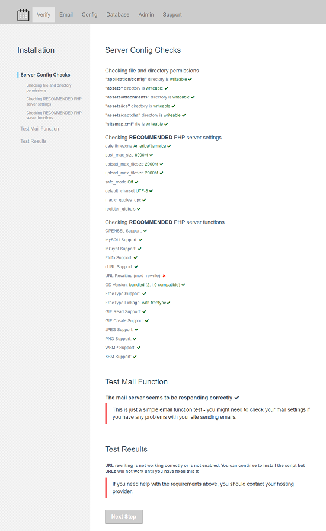
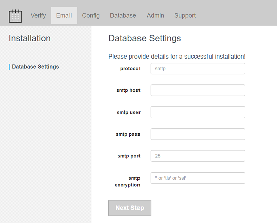
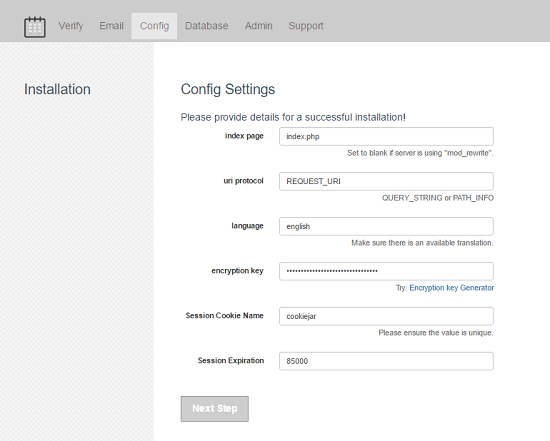
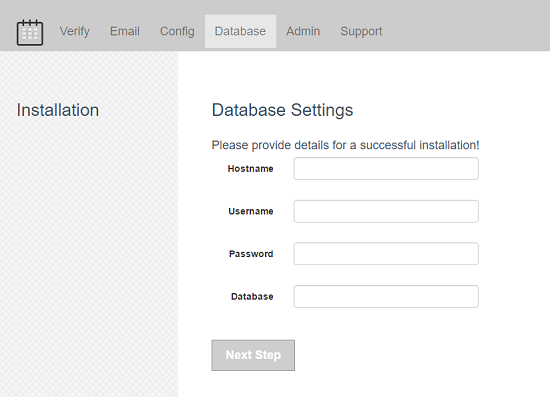
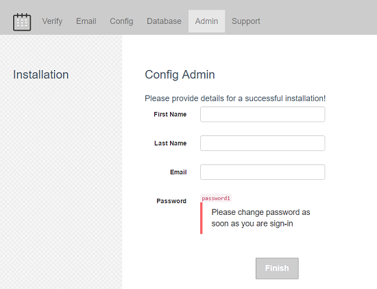

Introduction
CIFullCalendar is a server-side dynamic web application that is responsive to any layout of a viewing screen. The “Super Saiyan Fusion” power of CIFullCalendar allows users to organize, plan and share events to everyone. Simply, install it to your server and become a member then use the wonderful features by easily manipulating your events by dragging, dropping, resizing, clicking, touching, categorizing, grouping, filtering, linking and importing/exporting.
How can I use this script on my site?
If you already or considering having a site or a web app built on CodeIgniter framework, styled by bootstrap or other responsive theme and storing the data on MySQL, Sqlsrv, Oracle database etc. supported by CI this calendar script can be very useful. For example, if you wish to create an event site, booking site, appointment site, personal scheduling site, or any other site using CI framework the script can be easily plug-in into it. The idea is to display shared events on a calendar on your frontend (visitors page) of your site and control it at the backend (admin page) similarily like any other cms site that can easily edit contents and have it displayed to the public. Otherwise, if time allows, I am available to give support. Contact here
Requirements
Minimum Requirements
- PHP Scripting 5.1.x
- DB Driver mysql
- A Domain and a Server with FTP support
- MySQL 4.x with MyISAM or any with CodeIgniter supported databases.
- Microsoft IE or Edge
Recommended Requirements
- PHP Scripting v5.6.x
- Apache webserver
- MySQL 5.6+ with preferably with InnoDB tables or any with CodeIgniter supported databases.
- phpMyAdmin access to setup the initial database
- A Domain and a Server with FTP support
- An FTP tool to upload the files
- Best experience Chrome, Opera or Firefox
All CIFullCalendar components supports popular modern browsers.
Installation
Step 1: Unzip/Export all files
Unzip all files within the “upload_source” zip to your local machine first. After, upload all files to your server.
Step 2: Configuration
Open your browser and enter your domain URL (The path where the file is located).
Step 3: Installation Wizard - Verification
Simply, Start the installation as shown below if everything is checked out go ahead to the next. Otherwise, config your php.ini file or ask your host to do so.

Step 4: Installation Wizard - Email
Next, enter your email details as shown below.

Step 5: Installation Wizard - Configuration
After, enter your calendar web app configuration details as shown below.

Step 6: Installation Wizard - Database
Then, enter your database configuration details as shown below.

Step 7: Installation Wizard - Admin
Finally, enter your administrator details as shown below.

Operations
After completing the installation instructions, you're now ready to operate CIFullCalendar for the first time. Navigate your browser to the following details to login:
Log in with the default "admin" and start editing your site settings:
[YOUR DOMAIN NAME]/index.php/admin/login
username: admin
password: password1
Log in with the default "user" and start editing your calendar:
[YOUR DOMAIN NAME]/index.php/profile/login
username: user
password: password
Register a new user/member and start editing your calendar:
[YOUR DOMAIN NAME]/index.php/register
A successful sign-in will direct you to your calendar for editing and view other fun features.
Features
Currently, CIFullCalendar has evolved to become a modern, secure and efficient tool. Plus more:
- DB Driver – Supports MySQL or any CodeIgniter supported databases.
- Sitemaps – Search Engine Optimization purposes (yoursite.com/sitemap.xml)
- JSON – Share all of your public events by url. (yoursite.com/home/json).
- RSS Feeds – Share your public events by rss feeds (yoursite.com/feeds).
- ICAL – Members are able to export a single event to their Google, Yahoo and live calendars or to a ICAL Format (ics/ical).
- Event Filtering – Easily filter/view your shared events on your calendar
- Group Sharing – Easily share events among members in various groups
- Overlap – Deny or Allow events to overlap other events.
- Draggable Events - Allows members to easily drag and drop events by category on the calendar.
- Calendar settings - Allows administrator and members to adjust the FullCalendar settings easily.
- Attachments – Add/Update/Delete events with an attachment (txt,docx,zip...).
- Recurring Events – Add/Update/Delete events multiple times weekly, monthly etc. by clicking, touching, resizing and dragging.
- Background Events – Add events that appear as background highlights.
- Touch Support – Update or create events by touching or dragging events. Supported by many touch devices.
- Import/Export – Allowing members to Import and Export events in bulk using ical format (ics/ical).
- Google Maps – Members are able to use the google maps to view all their events location instantly.
- Search – Allowing visitors or members to search for public or their own private events.
- Event Category – Members are able to filter events by categories.
- Event Sources – Members are able to view calendar feeds from other urls on their own calendar.
- Notifications – Email notifications about public events and others.
- IonAuth - A simple and lightweight authentication library for the CodeIgniter framework. (Currently using IonAuth v2.6.0).
- Administration – Administrators of the site are able to moderate the site and other activities.
- Member Profile – Members of the site are able to manipulate their events and other activities.
- Group – Easily become or not a member of a particular group.
- Member's unique url – Share your own public events by URL (yoursite.com/yourusername)
- CMS – Easily create/update/delete pages and page contents.
- Print friendly - Use your browser to print your calendar events in its current view.
- Template – Easily customize your own themes. (Currently using bootstrap v3.3.6).
- Icons – Easily add icons within your own themes. (Currently using font-awesome v4.6.3).
- Language – Easily select your desire language. (en default language code). Language Request
Overview
A successful installation requires a properly configure Apache server.
Please do checks within your php.ini because properly adding a desire date.timezone for example is a requirement.
Google Maps requires API Key. reference here
FullCalendar Scheduler installation requires API Key. reference here.
Sources and Credits
I've used the following images, icons, js or other files as listed.
- Codeigniter v2.2.6 by EllisLab, Inc., British Columbia Institute of Technology and contributors
- FullCalendar v3.0.1* by Adam Shaw and contributors
- JQuery v3.1.0 with JQuery UI by jQuery Foundation and other contributors Licensed MIT
- Moment.js v2.18.1 & moment-timezone.js v0.5.12 Tim Wood, Iskren Chernev, and contributors
- IonAuth v2.6.0* by Ben Edmunds and contributors
- Bootstrap v3.3.6 by Twitter, Inc. and contributors
- Bootstrap-datetimepicker v4.17.42 by Eonasdan and contributors
- Bootstrap-select v1.11.0 by Silvio Moreto and contributors
- Bootstrap-table v1.11.1 by Zhixin Wen and contributors
- Font Awesome v4.7.0 by @davegandy and contributors
- Google Maps API v3 by Google
- Summernote by v0.8.3 Alan Hong and other contributors
- MarkerClusterer v1.0.1 by Luke Mahe and contributors
- CI Installer by Mike Crittenden and contributors
- CodeMirror by Marijn Haverbeke and contributors
- jekyll-table-of-contents by Alex Ghiculescu and contributors
- jQuery Validation Plugin by Jörn Zaefferer and contributors
Thank you for your support and purchase of “CIFullcalendar v3”. If you have any questions that are beyond the scope of this help file, please feel free to contact me via Support . Thanks so much! No guarantees on "ETA", but I'll do my best to assist.
Andre Gardiner
Document review 09/19/2017